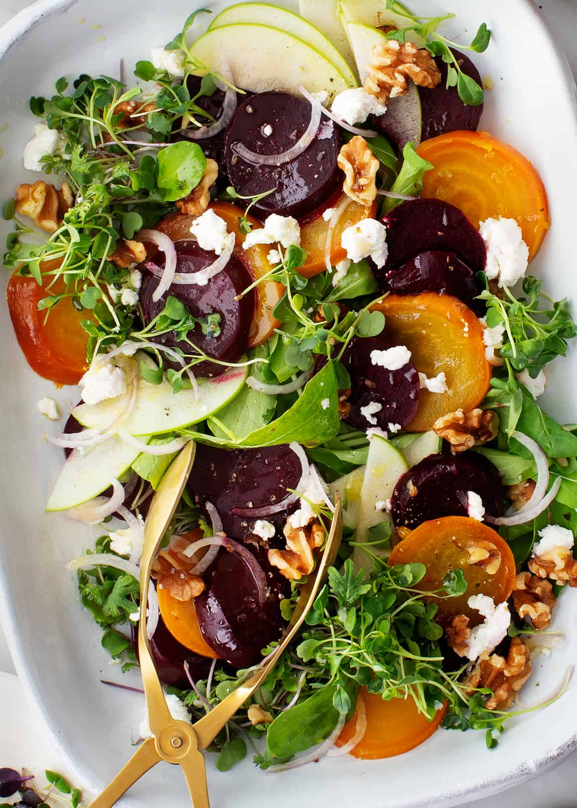

Beet Salad

Description
Stunning fall or winter side dish! Goat cheese, apples, and arugula fill it with a delightful mix of textures and flavors.
Ingredients
- 4 to 5 medium beets
- Extra-virgin olive oil, for drizzling
- 2 cups salad greens, arugula or spring mix
- 1/2 shallot, thinly sliced
- 1/2 green apple, thinly sliced
- 1/4 cup toasted almonds
- 2 ounces goat cheese, torn
- microgreens, optional
- Balsamic Vinaigrette
- Flaky sea salt
- Freshly ground black pepper
Steps
- Preheat the oven to 400°F.
- Wrap each beet in a piece of aluminum foil and drizzle generously with olive oil and pinches of salt and pepper. Place the beets on a baking sheet and roast for 40 to 90 minutes, or until soft and fork-tender. The time will depend on the size and freshness of the beets. Remove the beets from the oven, remove the foil, and set aside to cool. When they are cool to the touch, peel the skins. I like to hold them under running water and slide the skins off with my hands.
- Let the beets cool and chill them in the fridge until ready to use.
- Assemble the salad with the greens, shallots, apples, walnuts, cheese, and microgreens, if using. Drizzle with balsamic vinaigrette. Season with flaky sea salt and pepper and serve.
Recipe provided by loveandlemons.com